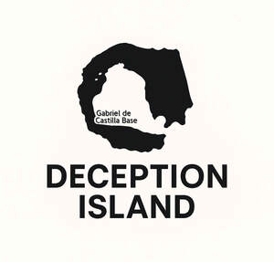

Trade Mark Journal No.2025/045 7 November 2025
UK00004274646 7 October 2025 (25,35)

- Class 25
- Beanie hats; Hats; Fascinator hats; Bobble hats; Cloche hats; Bucket hats; Fur hats; Toques [hats]; Woolly hats; Top hats; Baseball hats; Ski hats; Fake fur hats; Baseball caps and hats; Ushankas [fur hats]; Fashion hats; Rain hats; Sun hats; Mitres [hats]; Frames (Hat -) [skeletons]; Hat frames [skeletons]; Miters [hats]; Hats (Paper -) [clothing]; Paper hats [clothing]; Party hats [clothing]; Beach hats; Sports caps and hats; Small hats; Sedge hats (suge-gasa); Paper hats for wear by chefs; Paper hats for wear by nurses; Chefs' hats; Headgear for wear; Beanies; Caps [headwear]; Caps being headwear; Paper hats for use as clothing items; Bonnets [headwear]; Fedoras; Knitted gloves; Clothing for horse-riding [other than riding hats]; Head wear; Cap visors; Knitted caps; Headgear; Head scarves; Mittens; Headwear; Woollen socks; Sock suspenders; Camouflage gloves; Leather headwear; Bucket caps; Fingerless gloves as clothing; Visors [hatmaking]; Visors [headwear]; Visors being headwear; Valenki [felted boots]; Gloves [clothing]; Gloves as clothing; Bib overalls for hunting; Bootees (woollen baby shoes); Men's dress socks; Head sweatbands; Turtleneck shirts; Knit shirts; Short overcoat for kimono (haori); Fur cloaks; Knit jackets; Mitts [clothing]; Knitted clothing; Turtleneck sweaters; Face masks [fashion wear] ; Sun visors [headwear]; Dress shirts; Dress pants; Fishing headwear; Gloves; Fur jackets; Golf clothing, other than gloves; Skull caps; Lace boots; Toe socks; Woolen clothing; Vest tops; Breeches for wear; Slipper socks; Face mask [clothing] .
- Class 35
- Retail services connected with the sale of clothing and clothing accessories; Retail services in relation to clothing accessories; Mail order retail services for clothing accessories; Retail store services in the field of clothing; Procuring of contracts for the purchase and sale of goods; Mediation of contracts for purchase and sale of products; Negotiation of contracts relating to the purchase and sale of goods; Sales promotions at point of purchase or sale, for others; Mediation of agreements regarding the sale and purchase of goods; Procurement of contracts for the purchase and sale of goods and services; Arranging of auction sales; Auction sales (Arranging of -); Retail services connected with the sale of furniture; Advertising services relating to the sale of goods; Market analysis services relating to the sale of antiques; Procurement of contracts for the purchase and sale of goods and services for others; Market analysis services relating to the sale of goods; Conducting of auction sales; Advertising services relating to the sale of personal property; Arranging of contracts for the purchase and sale of goods and services, for others; Advice relating to the sale of businesses; Procurement of contracts for others relating to the sale of goods; Carrying out auction sales; Advertising services relating to the sale of motor vehicles; Rental of electronic point of sale (EPOS) equipment; Retail service connected with the sale of vehicles via a dealership; Retail services connected with the sale of subscription boxes containing beers; Retail services connected with the sale of subscription boxes containing cosmetics; Advertising services to promote the sale of beverages; Advertising automobiles for sale by means of the Internet; Auction and reverse auction services; Retail services connected with the sale of subscription boxes containing food; Arranging and conduction of auction sales; Retail services connected with the sale of subscription boxes containing chocolates; Promoting the sale of goods and services of others through promotional events; Retail service connected with the sale of power tools via a distributorship; Real estate auctions; Promoting the sale of fashion goods through promotional articles in magazines; Auction services; Promoting the sale of goods and services of others through the distribution of printed material and promotional contests; On-line trading services in which seller posts products to be auctioned and bidding is done via the Internet; Rental of sales stands; Provision of an online marketplace for buyers and sellers of goods and services; Provision of an on-line marketplace for buyers and sellers of goods and services; Providing information via the Internet relating to the sale of automobiles; On-line auction bidding for others; Sales promotion; Promoting the sale of goods and services of others by awarding purchase points for credit card use; Online retail services relating to handbags; Promoting the sale of the services [on behalf of others] by arranging advertisements; Arranging and conducting of real estate auctions; Auctioning of vehicles; Arranging business introductions relating to the buying and selling of products; Advisory services relating to the purchase of goods on behalf of business; Online retail store services relating to clothing; Provision of online marketplaces for buyers and sellers of goods and services which are authenticated by non-fungible tokens; Arranging of contracts for others for the buying and selling of goods; Auctioneering of property; Arranging of buying and selling contracts for third parties; Trade marketing [other than selling]; Online retail services relating to jewelry; Sales promotion services; Online retail services relating to toys; Providing on-line auction services.
Salim Matthew Dharshi